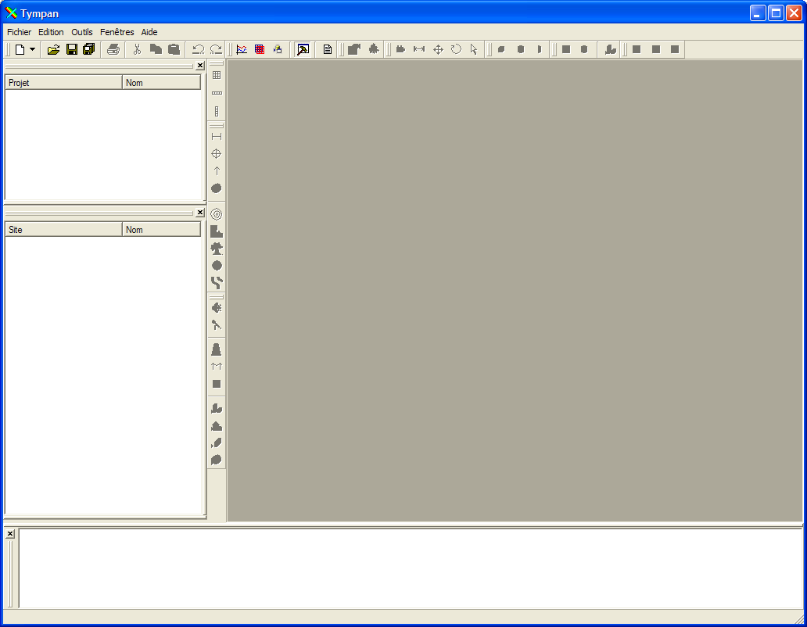

L'espace de travail de Tympan permet d'accéder directement à chaque composant de l'application (survoler et cliquer les zones intéressés) :

On distingue différents types d'éléments qui composent la fenêtre principale de Tympan, pour la plupart modulables :
L'application est aussi composée des éléments suivants :